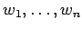
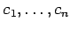
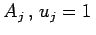
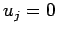
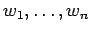
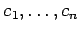
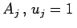
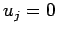
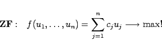
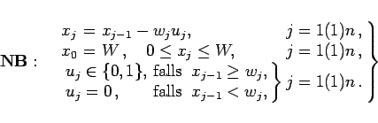

Inhalt Index DeskTop Bronstein

 Optimierung Diskrete dynamische Optimierung Beispiele diskreter Entscheidungsmodelle
Optimierung Diskrete dynamische Optimierung Beispiele diskreter Entscheidungsmodelle


Von den Artikeln  mit den Gewichten  und den Werten  sind einige so auszuwählen, daß ein Gesamtgewicht W nicht überschritten wird. Die getroffene Auswahl soll einen maximalen Gesamtwert erreichen. Dieses Problem hängt nicht unmittelbar von der Zeit ab. Es wird auf folgende Weise ,,künstlich`` dynamisiert. In jeder Stufe wird eine Entscheidung uj über die Auswahl des Artikels Aj getroffen. Dabei ist für ein ausgewähltes , anderenfalls ist . Wird die zu Beginn einer Stufe noch verfügbare Kapazität mit xj-1 bezeichnet, dann ergibt sich das folgende dynamische Problem:
mit den Gewichten  und den Werten  sind einige so auszuwählen, daß ein Gesamtgewicht W nicht überschritten wird. Die getroffene Auswahl soll einen maximalen Gesamtwert erreichen. Dieses Problem hängt nicht unmittelbar von der Zeit ab. Es wird auf folgende Weise ,,künstlich`` dynamisiert. In jeder Stufe wird eine Entscheidung uj über die Auswahl des Artikels Aj getroffen. Dabei ist für ein ausgewähltes , anderenfalls ist . Wird die zu Beginn einer Stufe noch verfügbare Kapazität mit xj-1 bezeichnet, dann ergibt sich das folgende dynamische Problem:
|  | (18.121a) |
|  | (18.121b) |